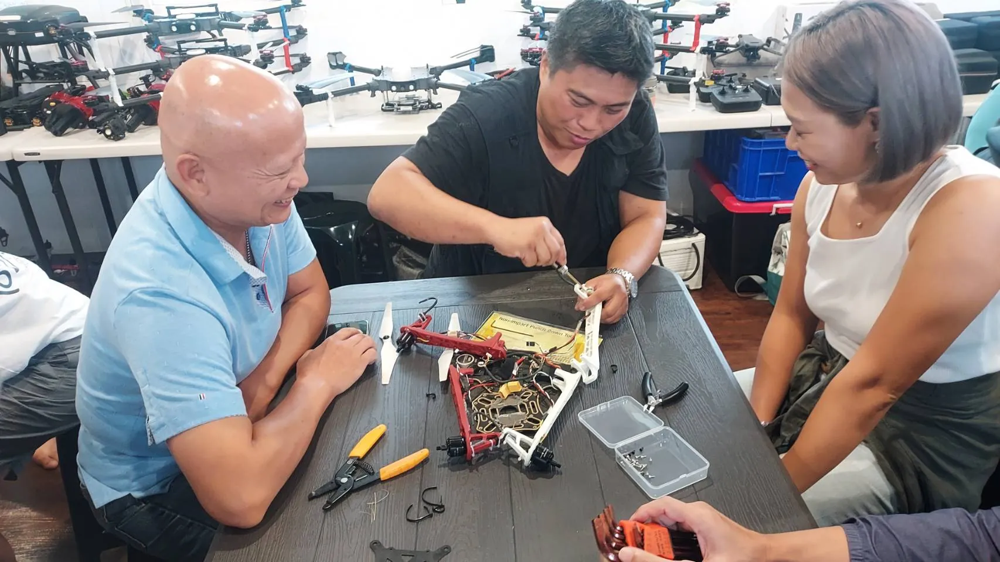

專案速覽：一頁看懂這 9 週
先把骨架列出來。以下數字全部取自訓練單位的課程表與相關公文，沒有估算值；每個上課日排 7 節為常態，其中兩天排滿 8 節、一天因共通課程只排 5 節，合計 280 節。
為什麼這個案例值得拆開來看
台灣的農用無人機不缺機器，缺的是「敢飛、會修、懂法規」的人。市面上多數課程把重心放在術科手感，學員結訓後常見三個斷點：不知道為什麼被禁飛、機器故障只能送修、噴藥的劑量與飄移講不清楚。這個 40 天的班，恰好是少見把這三件事一起排進課表的案例。
它的價值不在「上滿 280 節」這件事本身，而在順序：先法規與學科，再拆機器，接著才是飛行。這個順序讓後面每一次實機操作都有依據，而不是靠教練喊口令硬背動作。
課程設計：五個階段的推進邏輯
把 40 天的課表攤開，可以清楚看到五段推進。每一段都有明確的任務，也有對應的節數量；這種「一段一任務」的切法，比每天換一個主題更容易累積能力。
無人機概論與民航法規開場，接著是無人機學科、概論、電腦文書處理，再進到基礎組裝維護與三種機型的維修（植保機、農用吊掛機），並補上農業現況與常見作物病蟲害。先知道規則與機器長什麼樣，再談怎麼飛。
無人機影像於農業應用打頭陣，接著整整兩天共 14 節的模擬飛行訓練，最後兩天談認識農藥、以及農藥如何運用在植保機。在實機之前先把手指練穩，也先把藥劑觀念建立起來。
基本級訓練連續四天，中間穿插性別平等、職業道德、防詐、自殺防治與就業市場趨勢等共通課程；9/22 課表標註「滿 1/2 時數」，當天起連續三天轉入高級 1a/1b 訓練。期程過半，訓練強度同時拉高。
先安排一整天的考照模擬，再用初階操作把動作定型；接著是連續六天的農業實作（一）（二）（三）與三天田間實作，最後回到基本級訓練做總複習。把飛行從考場動作變成田裡的工作。
倒數第二天談影像數位化分類與三維點雲的應用，結訓當天則是就業說明及輔導。收尾不是考試，而是把技術接回工作。
一週長什麼樣子
以下是開訓第一週的實際排法，可以看出「一個主題吃一整天」的節奏——同一天七節課都是同一個科目、同一位講師，學員不必在科目之間反覆切換。
| 日期 | 星期 | 課程 | 教室 | 講師 |
|---|---|---|---|---|
| 115/08/25 | 二 | 無人機概論與民航法規 | 多功能教室 | 石志忠 |
| 115/08/26 | 三 | 無人機學科 | 多功能教室 | 阮思淳 |
| 115/08/27 | 四 | 無人機概論 | 多功能教室 | 阮思淳 |
| 115/08/28 | 五 | 電腦文書處理 | 資訊教室 | 古湘雲 |
| 115/08/31 | 一 | 無人機基礎組裝維護 | 多功能教室 | 曹晏銘（助教阮思淳） |


完整 40 天、280 節的逐日課表（含教室、講師、節數與階段篩選）另成一頁，方便你對照自己的訓練規劃：屏東無人機培訓班 40 日完整課表。
十位講師與三種教室
這個班的師資配置有一個明顯特徵：專業科目由不同領域的人分開講，不是一位教練從頭包到尾。法規與考照由石志忠負責，學科與實機訓練由阮思淳扛主線，維修與機體由曹晏銘處理，農業與病蟲害交給許智皓，影像與點雲是林建成，用藥是劉子耘。
| 講師 | 課程表出現的科目 | 角色 |
|---|---|---|
| 石志忠 | 無人機概論與民航法規、無人機考照模擬 | 法規與考照主講 |
| 阮思淳 | 無人機學科、無人機概論、基本級訓練、農業實作（一）（三）、田間實作 | 學科與實機主線，亦任多門課助教 |
| 古湘雲 | 電腦文書處理、模擬飛行訓練、自殺防治、就業說明及輔導 | 資訊課與行政輔導 |
| 曹晏銘 | 基礎組裝維護、植保機組裝維修、農用吊掛機組裝維修、高級 1a/1b、初階操作 | 機體與操作主講 |
| 許智皓 | 農業現況、常見作物的病蟲害、田間實作 | 農業專業 |
| 林建成 | 無人機影像於農業應用、影像數位化分類及三維點雲 | 影像與數據 |
| 劉子耘 | 認識農藥、農藥如何運用在植保機、農業實作（二） | 植物保護與用藥 |
| 顏任儀 | 性別平等課程 | 共通課程 |
| 阮信傑 | 職能導向課程－職業道德、預防詐騙、就業市場趨勢分析 | 職能與求職 |
| 楊順發 | 就業市場趨勢分析與求職技巧（後半段） | 就業輔導 |
場地只有三種，但分工很清楚：多功能教室上學科、法規與共通課程；資訊教室上電腦文書、模擬飛行與影像處理；無人機訓練場負責所有實機、考照模擬與田間實作。場地單純的好處是學員不會一直換環境，教具與充電設備也能固定配置。
考照輔導的三層設計
課表裡與考照直接相關的安排，可以拆成三層來看：
- 學科層：開訓第一週就把民航法規與無人機學科講完，後面每次實機前都還有依據可查，不必等到考前才回頭補。
- 手感層：9/08、9/09 兩天共 14 節模擬飛行，把基本操控、對頭與定點懸停練到不用思考，才接上 9/14 起的實機訓練。
- 實機層：基本級訓練分四段進行（9/14、9/18、9/21、10/16、10/19、10/21），中間穿插高級 1a/1b 三天（9/22–9/24），最後在 9/29 安排一整天的考照模擬，把流程與口令走完。
這種「分散式實機 + 集中式模擬考」的安排，解決的是同一個問題：飛行是肌肉記憶，不是知識。把六天的實機拆成多段，中間隔著幾天休息與其他課程，反而比連續十天硬操更容易留下手感。
參訓支持：職訓生活津貼怎麼算
40 天的全日制訓練，對多數人來說最大的門檻不是課難，而是這 40 天不能工作。這類補助地方政府辦理的職前訓練，符合資格者可依《就業保險法》申請職業訓練生活津貼，讓學員能真的全職投入。
| 項目 | 說明 |
|---|---|
| 法源 | 就業保險法第 11 條、第 19 條、第 19 條之 1 及其施行細則 |
| 計算基準 | 離職退保當月起前 6 個月平均月投保薪資的 60% |
| 發給週期 | 每 30 日為一期，先核定第一期，之後按月逐期審核至期滿 |
| 試算範例 | 平均月投保薪資 45,800 元 × 60% = 27,480 元／期（30 日） |
| 附加權益 | 受訓期間的全民健康保險費補助，由勞保局傳送資料予健保署辦理 |
教材、題庫與影音紀錄
這個案子的教材不是只靠一本講義。從民航局的測驗規範與學科題庫，到自編的智慧農業 100 題、分卷整理的題庫，再到模擬器與操作示範影片，形成一套可以重複使用的訓練資產。
- 規範類：遙控無人機操作證測驗與給證須知、學科測驗規範（AC 107-004B）。
- 題庫類：普通操作證、專業操作證、專業操作證屆期換證等學科題庫，以及換證簡易版。
- 自編練習：無人機智慧農業基礎選擇題 100 題（分「答案隱藏版」與「題目前標答案版」兩種版本）、無人機概論學科講義、飛機一般修護基礎考古題。
- 模擬與影音：DJI RC-N3 模擬器、遙控器操作示範影片、結業影片與生活點滴紀錄。
完整清單與用途說明整理在另一頁：教材、題庫與影音清單。
可以直接搬走的五個做法
如果你正在規劃自己的訓練課程，或正準備報名類似班別，以下五點是這個案最值得複製的地方。
一、法規與學科排在第一天，不是考前
多數人把法規當成「背一背就好」的考前科目，結果整期都在無意識飛行。把法規放在第一天，等於先給學員一張地圖：哪裡不能飛、為什麼、出事要怎麼處置。後面的操作才有判斷依據。
二、先拆機器，再談飛行
連續三天排組裝與維修（基礎、植保機、農用吊掛機），看起來像在拖延飛行時數，實際上是把「摔機」的風險提前拆掉。懂槳、電變、飛控與圖傳的人，飛行時對異常聲音與震動的敏感度完全不同。
三、模擬器吃滿兩天
14 節模擬飛行是很奢侈的配置，但它讓實機訓練的第一天就能進入狀況，而不是在原地練起降。對經費有限的單位，這是最划算的一筆投資。
四、實機訓練切三段，不要連著操
基本級 → 高級 1a/1b → 考照模擬，三段之間隔著其他課程。手感需要的是「間隔式的重複」，不是一次飛到累。
五、農業課與就業輔導把技術接回現場
田間實作三天、農業實作六天，加上結訓當天的就業說明，課表沒有停在「考上證照」就結束，而是繼續問：這項技術在田裡怎麼用、誰會付錢請你用。